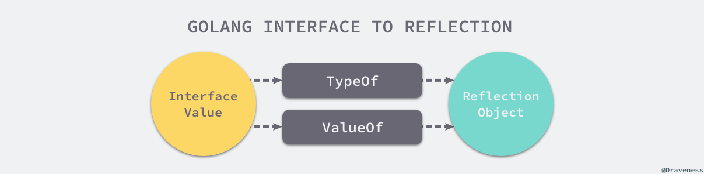
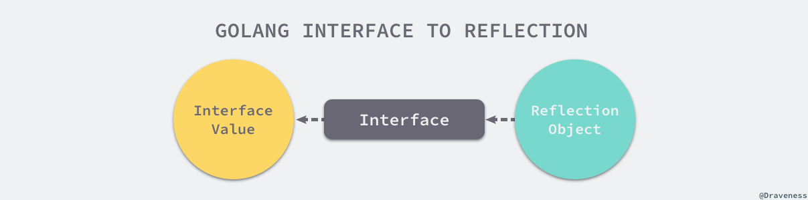
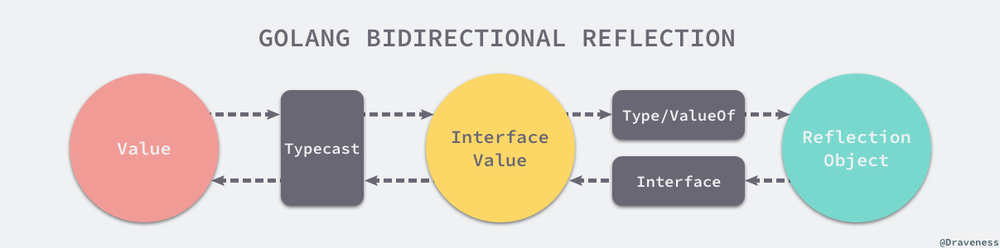

写日志收集项目的时候遇到了一个关于reflect的问题，于是有了这一篇文章。
本文主要介绍go语言中reflect的基本用法，以及在使用反射特性时遇到的一些坑。
关键词：反射
问题引入
使用go-ini时遇到了一个问题：
1 | var cfg *conf.AppConf |
此时会报错：
1 | panic: reflect: call of reflect.Value.Type on zero Value |
修改成以下内容错误就会消失了
1 | var cfg = new(conf.AppConf) // 要为cfg创建一个地址 |
以下是两种声明方式的区别：
- 使用
var声明一个变量的指针，默认值是nil，此时gc并没有为cfg分配内存； - 使用
new()创建一个conf.AppConf的对象（此时gc已经为cfg开辟了内存），同时获得这个对象的指针；
这让我对反射的用法产生了疑问。下面引出本文的核心：反射是什么？
反射是什么
反射是指程序运行期对程序本身进行访问和修改的能力，程序在编译时，变量被转换为内存地址，变量名不会被编译器写入到可执行部分。在运行程序时，程序无法获取自身的信息。
支持反射的语言可以在程序编译期将变量的反射信息如字段名称、类型信息、结构体信息等整合到可执行文件中，并给程序提供接口访问反射信息，这样就可以在程序运行期间获取类型的反射信息，并且有能力修改他们。
Go程序在运行期间使用reflect包访问程序的反射信息。
Go语言中的空接口可以存储任意类型的变量，反射可以在程序运行时动态的获取一个变量的类型信息和值信息。
reflect包
Go语言的反射机制中，任何接口值都是一个具体类型和一个具体类型的值 两部分组成。
Go语言中反射的相关功能是由内置的reflect包提供，任意接口值在反射中都可以理解为reflect.Type和reflect.Value两部分组成，并且reflect包里提供了以下两个函数来获取任意对象的Value和Type：
- reflect.TypeOf：能获取类型信息
- reflect.ValueOf：能获取数据的运行时表示
两个类型是reflect.Type和reflect.Value，他们和函数是一一对应的关系：
reflect.Type
类型reflect.Type是反射包定义的一个接口，可以使用reflect.TypeOf函数获取任意变量的类型， reflect.Type接口中定义了一些有趣的方法：MethodByName可以获取当前类型对应方法的引用、Implements可以判断当前类型是否实现了某个接口：
1 | type Type interface { |
reflect.Value
反射包中reflect.Value的类型与reflect.Type不同，他被声明成了结构体。这个结构体没有对外暴露的字段，但是提供了获取或者写入数据的方法。
1 | type Value struct{ |
反射包中所有方法都是围绕reflect.Type和reflect.Value两个类型设计的。
通过reflect.TypeOf、reflect.ValueOf可以将一个普通变量转换成reflect.Type和reflect.Value，随后就可以使用反射包中的方法对他们进行复杂的操作。
三大法则
运行时反射时程序在运行期间检查自身结构的一种方式，反射带来的灵活性是一把双刃剑，反射作为一种元编程方式可以减少重复代码，但是过量的使用反射会使我们的程序逻辑难以理解并且运行缓慢。使用反射，一般要遵守反射三原则：
从
interface{}变量可以反射出反射对象；从反射对象可以获取
interface{}变量；要修改反射对象，其值必须可设置；
第一法则
为什么是从interface{}变量到反射对象？当执行reflect.ValueOf(1)是，虽然看起来是获取了基本类型int对应的反射类型，但是由于reflect.TypeOf、reflect.ValueOf的两个方法的入参都是interface{}类型，所以在方法执行的过程中发生了类型转换。
由于Go语言的函数调用都是值传递的，那么变量在函数调用时会进行类型转换，基本类型会转换成interface{}类型，这就是为什么第一条原则是从接口到反射对象。
上面提到的reflect.TypeOf和reflect.ValueOf就能完成这里的转换。Go语言的类型和反射类型处于两个不同的世界，这两个函数是链接这两个函数的桥梁。

通过以下例子介绍他们的作用，reflect.TypeOf获取了变量author的类型，reflect.ValueOf获取了变量的值draven。如果我们知道了一个变量的值和类型，那么就意味着我们知道了这个变量的全部信息。
1 | func main(){ |
1 | $ go run main.go |
拿到变量的类型以后，可以通过Method方法获得类型实现的方法，通过Field获取类型包含的全部字段，对于不同的类型， 可以通过调用不同的方法来获取相关信息：
- 结构体：获取字段的数量并通过下标和字段名获取字段名StructField；
- 哈希表：获取哈希表的Key类型；
- 函数或方法：获取入参和返回值的类型；
- ...
总而言之，使用reflect.TypeOf和reflect.ValueOf能够获取
Go语言中的变量对应的反射对象，我们就能获得当前的数据类型和操作，并可以使用这些运行时获取结构执行方法。
第二法则
反射的第二法则是可以从反射对象获取interface{}变量，reflect中的reflect.Value.Interface()可以将反射对象还原成接口类型的变量：

调用reflect.Value.Interface方法只能获得interface{}类型的变量，如果还想将其还原成最原始的状态还需要对其进行显式类型转换：
1 | v := reflect.ValueOf(1) |
从反射对象到接口值的过程是从接口值到反射对象的镜面过程，两个过程都需要经历两次转换：
- 从接口值到反射对象：
- 从基本类型到接口类型的类型转换；
- 从接口类型到反射对象的转换；
- 从反射对象到接口值：
- 从反射对象转换成接口类型；
- 通过显式类型转换成原始类型；

不是所有的变量都需要类型转换这一过程。如果变量本身就是interface{}类型的，那么它不需要类型转换。只由将反射对象转换成基本类型时才需要显式的转换操作。
第三法则
Go语言反射的最后一条法则是与值是否可以被更改有关，如果我们想要更新一个reflect.Value，那么它持有的值一定是可以被更新的，假设由以下代码：
1 | func main(){ |
1 | $go run main.go |
上述代码出错的原因是：由于Go语言的函数调用都是传值的，所以我们得到的反射跟最开始的变量没有任何关系，那么直接修改反射对象无法改变原始变量，程序就会报错。
想要修改原变量只能使用如下的方法：
1 | func main() { |
1 | $go run main.go |
- 调用
reflect.ValueOf获取变量指针（传指针）； - 调用
reflect.Value.Elem获取指针指向的变量； - 调用
reflect.Value.SetInt更新变量的值；
由于Go语言的函数调用都是值传递的，所以我们只能用迂回的方式改变原变量：先获取指针对应的reflect.Value，再通过reflect.Value.Elem方法得到可以被设置的变量，通过以下代码理解这个过程：
1 | func main(){ |
如果不能直接操作i变量修改其持有的值，就只能获取i变量所在的地址并使用*v修改所在的地址中存储的整数。